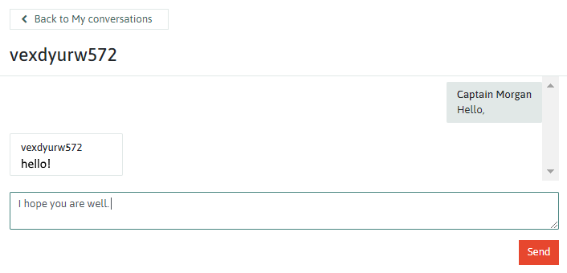

Commonshare - An Introduction
What does it mean?
Each commoner has their own 'Commonshare', which represents their contribution to the Commonfare platform. Both you and others can see your Commonshare on your personal profile. It might look something like this:
How do I increase my Commonshare?
Commonfare recognises a number of ways in which you can contribute to the growth and sustainability of the platform:
- Social interactions - Commoners can connect with others by initiating friendships, directly connecting them and
allowing them to communicate more easily, and receive updates on their friends' activities.
Social interactions also include conversations - Commoners can talk to one another through a messaging system, regardless of whether they are friends or not, to exchange information, support, or resources privately

- Information - commonfare.net has pages where Commoners can provide details on public benefits in their local area, such as businesses and organisations that aim to connect and inspire others towards collaboration and commonality.
Contributions can be made through providing information on these benefits, as well as sharing them with other Commoners.
- Exchanges - The Commonplace section of commonfare.net is where Commoners can exchange help, resources, skills and knowledge. This can be done for free, for direct trades, or you can ask to exchange for Common Coin, the digital token used on commonfare.net.
In terms of Commonshare, exchanges are contributions from both Commoners who take part.

- Stories - The 'Commoners Voices' section of commonfare.net allows Commoners to share stories of their experiences, to connect with and inspire others.
Creating a story is a contribution, along with commenting on and sharing the stories of others. These story interactions allow the experiences of others
to be disseminated to a wider audience, and allow story authors to receive feedback.

How do you calculate Commonshare?
A Commonshare value is built on all the different types of interactions that a Commoner has initiated through the platform.
It is designed to be a measure of the strength of contribution to the commonfare.net platform.
Why is it important?
It's important because blah blah blah
How is this different from other 'rating' systems like Uber or Amazon?
A Commoner's reputation is not based on their ability to provide a service or product. There is no such system that labels a Commoner as
'good' or 'bad'. Instead, reputation is built up through interactions that support the common good. Supporting others and offering services
are valued, and so is requesting this support. Those who reach out and ask for help also contribute to a collaborative society.